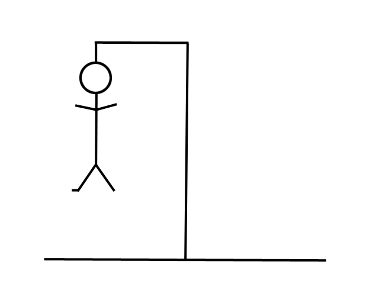

Control Panel
Reset Game
Show Answer
Give Hint
Instructions
Press the Spacebar to start the game
Press any letter key on your keyboard to guess that letter
Click the "Reset Game" link above to start over
???
Profit!
Let's Play Canine Hangman!

Number of Guesses
0